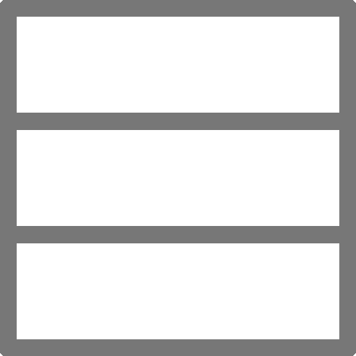

<!DOCTYPE html>
<html lang="en">
<head>
 <title>extramuros</title>
 <script src="http://ajax.googleapis.com/ajax/libs/jquery/1.11.1/jquery.min.js"></script>
 <link href="assets/css/prism.css" rel="stylesheet" type="text/css" />
    <link rel="stylesheet" type="text/css" href="assets/css/style.css">
    <link rel="stylesheet" type="text/css" href="assets/css/editor.css">
    <link rel="stylesheet" type="text/css" href="assets/css/single.css">
 <script src="assets/js/caret.js" type="text/javascript"></script>
 <script src="assets/js/prism.js" type="text/javascript"></script>
 <script src="assets/js/mlayout.js" type="text/javascript"></script>

</head>

<body onload="setup(12); loadProxy();">
<script type="text/javascript">
    // Optional
    Prism.plugins.NormalizeWhitespace.setDefaults({
        'remove-trailing': false,
        'remove-indent': true,
        'left-trim': true,
        'right-trim': false,

    });
</script>
<div id="global">

  <div class="header">
  <div class="float-left">
      <a tabindex="1" href="single.html"></a>
      <a tabindex="2" href="hlayout.html"></a>
      <!--<a tabindex="3" href="vlayout.html"></a>-->
      <a tabindex="4" href="./index.html"></a>
  </div>
   <div class="float-right">
    <input type="file" name="ins" id="files" class="text" value="Upload"/>
    <input type="text" name="filename" length="32" id="filename" class="text" value="tidal"/>
    <input type="button" name="ins" id="ins" class="text" onclick="save()" value="Save"/>
   </div>
  </div>
 <hr/>

    <div class="row">
        <div class="column cw-80">
            <pre class="editor">
                <code tabindex="5" id="edit1" spellcheck="false" contenteditable="true" class="language-tidal"></code>
                <code tabindex="5" id="edit2" spellcheck="false" contenteditable="true" class="language-tidal hidden"></code>
                <code tabindex="5" id="edit3" spellcheck="false" contenteditable="true" class="language-tidal hidden"></code>
                <code tabindex="5" id="edit4" spellcheck="false" contenteditable="true" class="language-tidal hidden"></code>
                <code tabindex="5" id="edit5" spellcheck="false" contenteditable="true" class="language-tidal hidden"></code>
                <code tabindex="5" id="edit6" spellcheck="false" contenteditable="true" class="language-tidal hidden"></code>
                <code tabindex="5" id="edit7" spellcheck="false" contenteditable="true" class="language-tidal hidden"></code>
                <code tabindex="5" id="edit8" spellcheck="false" contenteditable="true" class="language-tidal hidden"></code>
                <code tabindex="5" id="edit9" spellcheck="false" contenteditable="true" class="language-tidal hidden"></code>
            </pre>
        </div>
        <div class="proxy-column cw-20">
             <pre class="proxy active">
                <code id="proxy1" spellcheck="false" class="language-tidal"></code>
            </pre>
            <pre class="proxy">
                <code id="proxy2" spellcheck="false" class="language-tidal"></code>
            </pre>
            <pre class="proxy">
                <code id="proxy3" spellcheck="false" class="language-tidal"></code>
            </pre>
            <hr/>
            <pre class="proxy">
                <code id="proxy4" spellcheck="false" class="language-tidal"></code>
            </pre>
            <pre class="proxy">
                <code id="proxy5" spellcheck="false" class="language-tidal"></code>
            </pre>
            <pre class="proxy">
                <code id="proxy6" spellcheck="false" class="language-tidal"></code>
            </pre>
            <hr/>
            <pre class="proxy">
                <code id="proxy7" spellcheck="false" class="language-tidal"></code>
            </pre>
            <pre class="proxy">
                <code id="proxy8" spellcheck="false" class="language-tidal"></code>
            </pre>
            <pre class="proxy">
                <code id="proxy9" spellcheck="false" class="language-tidal"></code>
            </pre>
        </div>
    </div>
</div>

 <script src="assets/js/file.js"></script>
 <script src="assets/js/browser.js"></script>

 <script src="/channel/bcsocket.js"></script>
<script src="/share/share.uncompressed.js"></script>
<script src="/share/textarea.js"></script>
<script src="/share/json.js"></script>
 <script src="visuals.js"></script>
<script src="assets/js/misc.js"></script>

</body>
</html>
